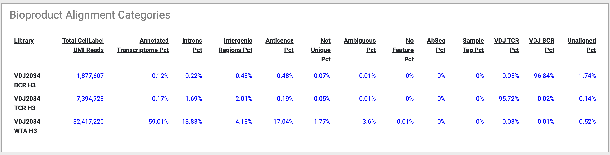

Pipeline Report HTML:
File:[sample_name]_Pipeline_Report.html
Overview: The pipeline report is a stand-alone HTML file that doesn't need an internet connection, making it easy to share.
Features:
- Interactive Metrics: Hover over metrics to reveal specific information.
- Graphs Section: Visualize results with several graphs.
- Sequencing Summary Metrics: Includes the number of reads, cells, and other key metrics.
- Cell Calling Summary: Shows the number of putative cells and molecules detected.
- Immune Cell Type Classification: Lists the number of cells classified by type.
- Pipeline Inputs Section: Details the inputs used for the analysis, allowing reproduction of the same results.
Summary Section

- Putative cells
Cell Labels: The number of unique cell labels detected should match the number of cells captured and amplified. However, noise can introduce extra cell labels due to:
- PolyA Oligonucleotides: Hybridization to non-cell beads if cell lysis is too long.
- Under-loading Beads: Cells without beads cause RNA to diffuse to adjacent wells.
- Oligo Contamination: Low-level contamination during bead synthesis.
- PCR Errors: Errors during PCR amplification steps.
Further reading for Putative Cell Algorithm.
- Total Reads in FASTQ
Reads Count: Should reflect the amount needed for sequencing from your calculator. Indicates if your provider sequenced enough reads.
- Pct Reads Passing Quality Filter
- Quality Filter: Higher percentage passing is better. Detailed sections in the HTML file show granularity for each filter
Further reading on Quality Filter.
- Aligned Reads By Type
- Reads Count: Should match around the total needed per assay (in millions). If lower, check:
- Total Reads in FASTQ
- Pct Reads Passing Quality Filter
- Mean Reads Per Cell
- Reads Per Cell: Should be close to the assigned reads per cell on the calculator. If lower, check:: Should be close to the assigned reads per cell on the calculator. If lower, check:
- Total Reads in FASTQ
- Pct Reads Passing Quality Filter
Graph Section
The graph section has several interactive graphs highlighting some of the most important results from the analysis.
For pipeline runs that identify more than 100,000 putative cells, tSNE, UMAP and histogram graphs will show a random sub-sample of 100,000 cells.
Exampe of Graphs
Click on the images below:
×

Example: Bioproduct Expression (CD4 AbSeq)
- Graph Overview:
- tSNE/UMAP: On the left, each dot represents a putative cell, colored by the log10 expression of the selected AbSeq target or mRNA gene.
- Histogram: On the right, shows the distribution of expression for all cells for the selected target or gene.
- Data Selection:
- Default: The bioproduct with the highest expression is selected by default.
- Dropdown List: AbSeq targets and mRNA genes are sorted by total expression, with AbSeq targets shown first.
- Display:
- Dropdown List: For experiments with many bioproducts, only the most highly, widely, and variably expressed genes plus all AbSeq targets are shown.
AbSeq (Total Molecules per cell)
- Graph Overview:
- tSNE/UMAP: On the left, each dot represents a putative cell, colored by the log10 total expression of AbSeq targets.
- Histogram: On the right, shows the distribution of expression for all cells for AbSeq targets.
mRNA (Total Molecules per cell)
- Graph Overview:
- tSNE/UMAP: On the left, each dot represents a putative cell, colored by the log10 total expression of mRNA targets.
- Histogram: On the right, shows the distribution of expression for all cells for mRNA targets.
Immune Cell Type Experimental
The Immune Cell Type Experimental graph displays the tSNE/UMAP plot, with each cell labeled based on the results from the Cell Type prediction algorithm.
Sample Multiplexing (SMK)
The Sample Multiplexing tSNE/UMAP plot shows the cells labeled by sample tag and includes the multiplet and undetermined cell labels.
VDJ BCR Paired Chains
The VDJ BCR Paired Chains tSNE/UMAP plots show the clusters of cells with BCR paired chains.
VDJ TCR Paired Chains
The VDJ TCR Paired Chains tSNE/UMAP plots show the clusters of cells with TCR paired chains.
Total Transposase Sites in Peaks per cell (ATAC-Seq)
- Graph Overview:
- tSNE/UMAP: On the left, each dot represents a putative cell, colored by the log10 total transposase sites in peaks.
- Histogram: On the right, shows the distribution of total transposase sites in peaks for all cells.
Metrics Section
There are several sections in the pipeline report providing details about specific metrics.
- The main bioproduct sections cover:
-
Sequencing Quality

- Pct Read Pair Overlap:
- Purpose: Tests if Read1 and Read2 overlap to remove R1 content from R2.
- Importance: Prevents misalignment and misassembly of cell label sequences in Read2.
- Note: This step does not remove any read pairs from subsequent steps.
- Use: Helps troubleshoot PCR cleanup and library preparation.
- Pct Reads Too Short
- Purpose: Shows the percentage of read pairs filtered out due to short length.
- Criteria:
- R1 read < bead-specific minimum length.
- R2 read < 40 bp.
- R1/R2 Minimum Lengths:
- Original V1: R1 = 60, R2 = 40
- Enhanced dT 3': R1 = 43, R2 = 40
- Enhanced TCR/BCR: R1 = 63, R2 = 40
- Pct Reads Low Base Quality
- Purpose: Shows the percentage of read pairs filtered out due to low base quality.
- Criteria:
- R1 read quality < 20.
- R2 read quality < 20.
- Use: Helps troubleshoot PCR cleanup and library preparation.
- Pct Reads High SNF
- Purpose: Shows the highest Single Nucleotide Frequency (SNF) across the read bases. This criteria removes reads with low complexity such as strings of identical bases and tandem repeats.
- Criteria:
- SNF ≥ 0.55 for R1.
- SNF ≥ 0.80 for R2.
- Pct Reads Filtered Out
- Purpose: Shows the percentage of reads removed due to length, quality, and SNF combined.
Further reading for Sequencing Quality.
Library Quality

This section giving more details on:
- Total Filtered Reads: This is the remaining reads after Filtering.
- Pct Q30 Bases in Filtered R2
- Pct CellLabel UMI
- Pct CellLabel UMI Aligned Uniquely
- Pct Reads Useful
Further reading for Cell Label UMI annotation
Alignment Categories

- Overview: Shows the percentage of reads aligned to specific regions or assays.
- If the same FASTQ file contain multiple assay, the percentage of each assay will be provided on the same row.
Further reading on Alignment to Reference.
Reads and Molecules
Our reads will go through Recursive Substitution Error Correction (RSEC). Further reading on Molecules and Error Correction.
The ATAC assay sections covering:
- Sequencing Quality
- Library Quality
- Alignment Categories
Fragments
ATAC Fragments

- ATAC Fragment Lenght Distribution Plot
- Chromatin Organization: Healthy cell chromatin is organized into nucleosomes by wrapping DNA around histone proteins.
- Fragment Lengths: DNA within nucleosomes is not accessible to Tn5 transposase, leading to a multi-peaked length distribution in ATAC-Seq experiments.
- Nucleosome-Free Region (NFR): Fragments <147 bp.
- Mononucleosomal Length: Fragments between 147-294 bp.
- Quality Indicator: Lack of NFR, mononucleosomal, and dinucleosomal peaks suggests low-quality experiments, often due to dead/dying cells or poor sample handling.
Peaks
ATAC Peak

- TSS Enrichment: Measures Tn5 activity around Transcription Start Sites (TSS).
- Regions Analyzed: 2000 bp upstream and downstream of TSS.
- Normalization: Tn5 site counts are normalized by the background rate of Tn5 activity.
- Enrichment Score: Defined as the peak value of the TSS Enrichment Plot.
Cells
The Cells section provides interactive graphs from the basic and refined cell calling algorithms that were described in Determine Putative Cells section .
It also includes cell related metrics for all bioproducts and ATAC-Seq data that was included.
Cell Calling Graphs
Click on the images below:
×

Bioproduct Cell Calling
- Default algorithm:
- The Basic Cell Calling Algorithm is used for bioproducts by default.
- Basic Cell Calling Algorithm:
- The second derivative plot is displayed on top of the cumulative read plot.
- The basic cell line is shown in red.
- Hovering over the graph will display a vertical line indicating the number of putative cells on the cumulative read plot.
- All general graph functionalities are available (see General Graph Functionality for details).
- Refined Algorithm:
- For pipeline runs using the Refined Algorithm for mRNA and AbSeq::
- The number of false positive, false negative, and low molecule count cells are shown.
- These numbers together show how the final refined cell call number was derived.
ATAC Cell Calling
- Default algorithm:
- The Basic Cell Calling Algorithm is used for ATAC-Seq by default.
- Basic Cell Calling Algorithm:
- The second derivative plot is displayed on top of the cumulative transposase sites in peaks plot.
- The basic cell line is shown in red.
- Hovering over the graph will display a vertical line indicating the number of putative cells on the cumulative read plot.
- All general graph functionalities are available (see General Graph Functionality for details).
- Refined Algorithm:
- For pipeline runs using the Refined Algorithm for ATAC-Seq:
- Putative cell and non-cell clusters from the Gaussian Mixture Model (GMM) refined algorithm are shown on a scatter plot.
- The x-axis represents the number of transposase sites in peaks.
- The y-axis represents the fraction of transposase sites in peaks.
- Details and Reporting:
- The initial number of putative cells is determined by the first and second GMMs using both the number and fraction of transposase sites in peaks.
- False positive and false negative cell labels are identified in the final refitting step.
Joint mRNA and ATAC Cell Calling
- Default algorithm:
- The Basic Cell Calling Algorithm is used for ATAC-Seq by default.
- Basic Cell Calling Algorithm:
- The second derivative plot is displayed on top of the cumulative transposase sites in peaks plot.
- The basic cell line is shown in red.
- Hovering over the graph will display a vertical line indicating the number of putative cells on the cumulative read plot.
- All general graph functionalities are available (see General Graph Functionality for details).
- Refined Algorithm:
- For pipeline runs using the Refined Algorithm for ATAC-Seq:
- Putative cell and non-cell clusters from the Gaussian Mixture Model (GMM) refined algorithm are shown on a scatter plot.
- The x-axis represents the number of transposase sites in peaks.
- The y-axis represents the fraction of transposase sites in peaks.
- Details and Reporting:
- The initial number of putative cells is determined by the first and second GMMs using both the number and fraction of transposase sites in peaks.
- False positive and false negative cell labels are identified in the final refitting step.
Sample Multiplexing
- Summary Information:
- Number of filtered reads aligned to sample tags.
- Percentage of sample tag reads assigned to putative cells.
- Detailed Section:
- Number and percentage of reads assigned to each sample tag.
- Number and percentage of cells for each sample tag.
- Number of reads per cell and mean reads per cell for each sample tag.
- Number of multiplets and undetermined cells.
VDJ
- Reads Table:
- Shows summary information for Chain Category (BCR/TCR).
- Molecules and Dominant Contigs Table:
- Shows summary information for Chain Category (BCR/TCR).
- Cell Type Specific Metrics:
- Four tables available from the dropdown menu:
- Paired Chains Percentage.
- Percentage of Cells Positive.
- Percentage of Cells Full Length.
- Mean Molecules per Cell.
Further reading on VDJ Anlysis Algorithm.